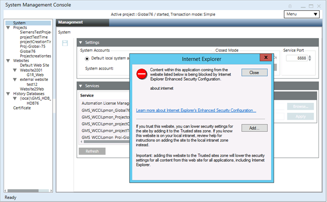
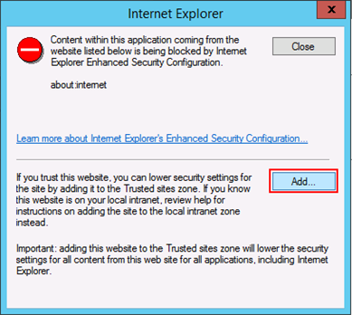
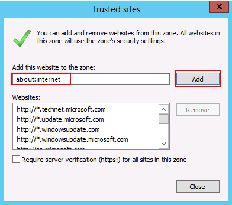
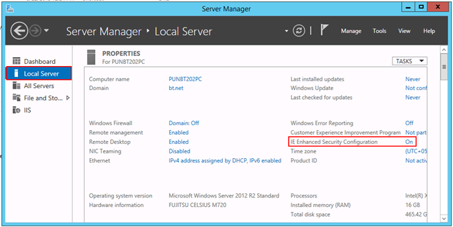
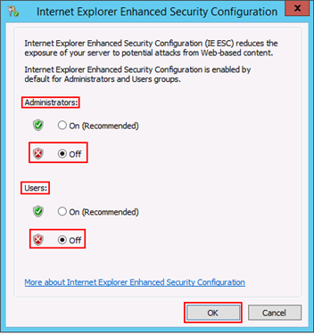

Troubleshooting the SMC Startup on Windows Server Machines
Problem: The following message displays on launching SMC on Windows server machines.

Cause: The IE Enhanced Security Configuration is ON in Windows Server machines.
Solution 1: Add the about:internet Site to the Trusted Sites Zone
- In the Internet Explorer dialog box that displays, click Add.

- In the Trusted Sites dialog box that displays, click Add.

- Click Close.
- The Internet Explorer dialog box closes.
Solution 2: Turn Off the IE Enhanced Security Configuration Property (IE ISC)
- Do one of the following:
- On the Windows desktop, click Server Manager in the taskbar.
- On the Windows Start screen, click Server Manager.
- In the Server Manager, select Local Server.
- In the Properties section, for the IE Enhanced Security Configuration property, select the toggle button On.

- The Internet Explorer Enhanced Security Configuration dialog box displays.
- For Administrators and Users, set the IE ESC Off.

- Click OK.
- The IE ESC property is turned off. Now, you can re-launch the SMC and work with it.
While Opening, AFW/SMC/WSI Gets Crashed
Problem: While opening, AFW/SMC/WSI gets crashed.
Cause: Two DLLs deployed by some third-party software, namely, libeay32.dll and ssleay32.dll in the [System Drive:]\Windows\System32 having lower version than the same dlls present in the [Installation Drive:]\[Company Name]\WinCC_OA\3.16\bin folder.
Solution1: Modify the system setting path by placing the WinCC OA path
([Installation Drive:]\[Company Name]\WinCC_OA\[WinCC OA Version Number e.g. 3.16]\bin\) to the beginning.
Solution 2: Delete the two dlls libeay32.dll and ssleay32.dll from the [System Drive:]\Windows\System32 folder.
Solution 3: Do the following steps:
- Verify if the two dlls two DLLs libeay32.dll and ssleay32.dll in [System Drive:]\Windows\System32 folder has the lower version than that of the dlls present in the [Installation Drive:]\[Company Name]\WinCC_OA\\[WinCC OA Version Number e.g. 3.16]\bin folder.
- If yes, then replace the two DLLs libeay32.dll and ssleay32.dll in the [System Drive:]\Windows\System32 folder with the same DLLs (but higher version) in the [Installation Drive:]\[Company Name]\WinCC_OA\\[WinCC OA Version Number e.g. 3.16]\bin folder.